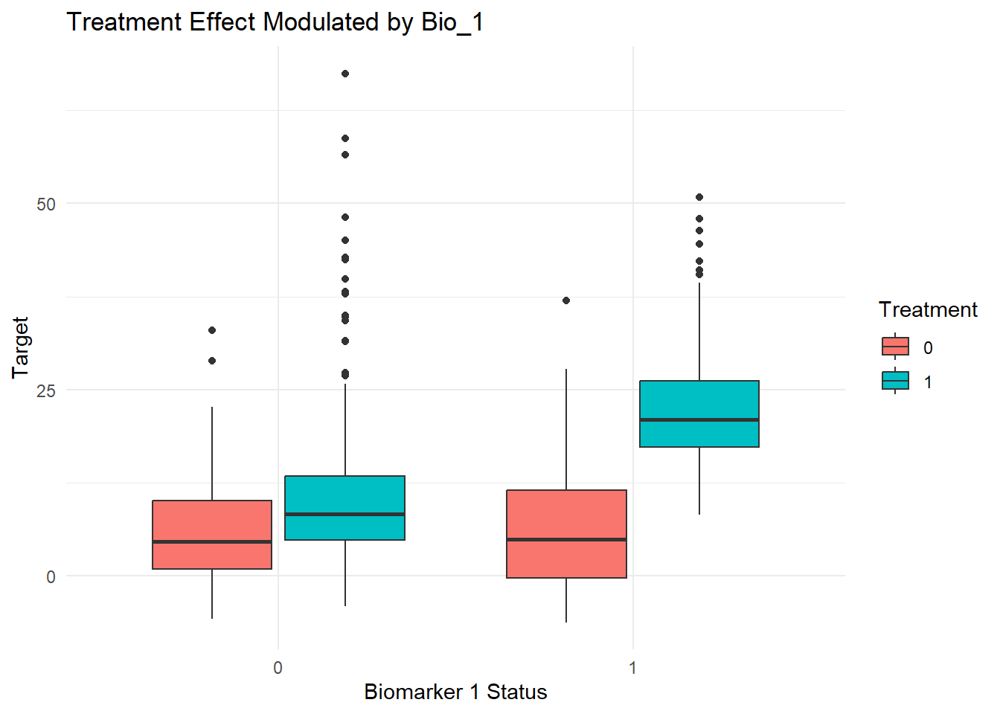

library(MASS)
n_hist <- 200 # Patients per historical study
n_trial <- 500 # Patients in current trial
H <- 5 # Number of historical studies
p_cont <- 50 # Number of continuous features
p_bin <- 5 # Number of binary biomarkers
rho <- 0.8 # Correlation for collinearity
global_hist_drift <- 0 # Global historical vs current shiftPrognostic Score Construction and MAP Prior Workflow
Overview
This document describes The Data generation procedure and the Bayesian Borrowing steps:
Data Generation
The goal is to create a realistic clinical trial setting with:
- Multiple historical studies (placebo only),
- One current randomized trial (placebo + treatment),
- High-dimensional, collinear covariates,
- Both prognostic and predictive covariate effects,
- Optional distributional drift between historical and current data.
The full data-generating process is known and controlled, enabling principled evaluation of borrowing and transfer-learning methods.
Global Simulation Parameters
As an example (just to show for a replicate)
The simulation consists of:
- \(H = 5\) historical studies, each with \(n_{hist}=200\) subjects,
- One current study with \(n_{trial} =500\) subjects,
- \(p=55\) covariates in total:
- \(50\) continuous laboratory variables,
- \(5\) binary biomarkers.
Covariates Generation
Continuous Features
Continuous covariates are generated from a multivarite normal distribution with strong colinearity. The covariance matrix follows the Toeplitz structure:
\[ \Sigma_{ij}=\rho^{|i-j|}, \ \ \ \ \rho = 0.8 \] This is made to include realistic correlation patterns commonly observed in clinical laboratory data.
Binary Biomarkers
Binary biomarkers represent genetic or molecular indicators and are generated independently from a Bernolli distribution with success probability 0.3.
The procedure for the covariates generation is implemented in the following function:
generate_x <- function(n) {
sigma <- toeplitz(rho^(0:(p_cont - 1)))
X_cont <- mvrnorm(n, mu = rep(0, p_cont), Sigma = sigma)
X_bin <- matrix(rbinom(n * p_bin, 1, 0.3), nrow = n)
colnames(X_cont) <- paste0("Lab_", 1:p_cont)
colnames(X_bin) <- paste0("Bio_", 1:p_bin)
cbind(X_cont, X_bin)
}Outcome Model
The continuous outcome variable \(Y\) is generated as the sum of:
Prognostic signal (covariate main effects),
Predictive treatment effect (treatment–biomarker interaction),
Study-level drift (historical studies only),
Global historical drift (optional, a measure of descrepancy between the joint historical data and the current data),
Random noise.
Prognostic component
The prognostic signal is nonlinear and involves interactions:
\[ f(x) = 2Lab_1 +3Lab_2^2 +5sign(Lab_3) + 4Lab_4 \times Lab_5 \]
Predictive (Treatment) component
Treatment effects depend on biomarker status:
\[ g(X,T)=5T+12T\times Bio_1 \] This creates a strong predictive biomarker, where subjects with \(Bio_1=1\) experuence substantially larger treatment effects.
Noise and Drift
- Observation-level noise: \(\varepsilon \sim N(0,2^2)\)
- Inter study drift: obtained from a random Uniform sample \([-2,2]\) (historical study only)
- Global historical drift: constant shift applied to all historical data, to shift it from the current trial.
The function for the outcome generation is as follows:
generate_y <- function(X, Trt,
study_drift = 0,
global_hist_drift = 0) {
prog_signal <- (2 * X[, "Lab_1"]) +
(3 * X[, "Lab_2"]^2) +
(5 * sin(X[, "Lab_3"])) +
(4 * X[, "Lab_4"] * X[, "Lab_5"])
trt_effect <- (5 * Trt) + (12 * Trt * X[, "Bio_1"])
noise <- rnorm(nrow(X), mean = 0, sd = 2)
prog_signal +
trt_effect +
study_drift +
global_hist_drift +
noise
}Historical Data Generation
Each historical study:
Contains placebo-only subjects,
Shares the same covariate distribution,
Has its own random study-level drift,
Optionally shares a pooled historical drift.
historical_data <- lapply(1:H, function(s) {
X <- generate_x(n_hist)
Trt <- rep(0, n_hist)
Y <- generate_y(
X, Trt,
study_drift = runif(1, -2, 2),
global_hist_drift = global_hist_drift
)
data.frame(
Study = paste0("H", s),
Treatment = Trt,
Target = Y,
X
)
})Current Trial Generation
The current trial differs from historical data in that:
Subjects are randomized to treatment with probability 0.7,
No study-level or global drift is applied,
Both prognostic and predictive effects are active
X_trial <- generate_x(n_trial)
Trt_trial <- rbinom(n_trial, 1, 0.7)
Y_trial <- generate_y(X_trial, Trt_trial)
current_trial <- data.frame(
Study = "Current",
Treatment = Trt_trial,
Target = Y_trial,
X_trial
)
all_data <- do.call(rbind, c(historical_data, list(current_trial)))Just to check the predictive Biomarker Effect
library(ggplot2)
ggplot(
current_trial,
aes(x = factor(Bio_1), y = Target, fill = factor(Treatment))
) +
geom_boxplot() +
labs(
title = "Treatment Effect Modulated by Bio_1",
x = "Biomarker 1 Status",
fill = "Treatment"
) +
theme_minimal()
Bayesian Borrowing technique
- Construction of a prognostic score using historical control data.
- Construction of a MAP (Meta-Analytic-Predictive) prior using the prognostic score.
- Application of the MAP prior in the current trial.
Assume:
- \(K\) historical trials
- Patient-level covariates \(X_i\)
- Outcome \(Y_i\)
- Treatment indicator \(w_i\)
Notation
For patient \(i\) in study \(k\):
\[ (X_{ik}, Y_{ik}, w_{ik}) \]
Where:
- \(X_{ik} \in \mathbb{R}^p\): baseline covariates
- \(Y_{ik}\): outcome
- \(w_{ik} \in \{0,1\}\): treatment indicator
Let:
\[ \mathcal{H} = \bigcup_{k=1}^K D_k^{(control)} \]
be the pooled historical control dataset.
Step 1: Build the prognostic model
The prognostic score is defined as:
\[ m_i = E(Y_i \mid X_i, \text{Control}) \]
We estimate this function using a random forest trained on historical controls.
Formally:
\[ Y_i^{H} = f(X_i^{H}) + \varepsilon_i \]
where:
- \(f(\cdot)\) is an unknown nonlinear function
- estimated using any machine learning model.
The prognostic score is:
\[ m_i = \hat{f}(X_i) \]
R: Fit Random Forest Prognostic Model
library(randomForest)Important note on drift:
There are two choices on how to fuit the prognostic models to/not to capture the inter-trial variability:
Option A: Ignore the study indicator (this is simple pooling of the historical data)
\[Y \sim X\] This assumes that the prognostic relationship is similar across trials.
Option B: Include the study as a feature of the prognostic model:
\[ Y \sim X + Study \] This captures the inter-trial differences and baseline shifts.
Step 2: Compute the prognostic scores
Once the Prognostic model is built (trained):
Compute the prognostic scores as follows:
- For historical Controls:
\[ m_i^H = \hat{f}\left(X_i^H\right) \] - For current trial: \[ m_i^C = \hat{f}\left(X_i^C\right) \]
So that every patient (regardless of where s(he) belongs) has \(m_i\), [prognostic score]
Step 3 Build the MAP prior (Informative component)
Now ignore the original covariates and use only the outcome \(Y\) and the prognostic score \(m\) for the historical controls.
For each dataset \(k\)
Fit: \[ Y_{ik} = \beta_{0k} + \beta_{2k}m_{ik} + \varepsilon_{ik} \] This gives the posterior: \(\pi_k\left(\beta_0, \beta_2,\sigma^2\right)\)
These are combined across studies using MAP to get the \(MAP\) prior. And can be converted to a mixture of conjugate distributions usingautomixfit function from the RBesT package.
Step 4: “Robustification”
The prior can then be robustified using the RBesT package to get the informative and the non informative components of the prior. Where an initial weight of the robust component is given as an argument of the function.
Step 5: Analysis Model in the Current trial
Now, the analysis model is fitted:
\[ Y_i = \beta_0 + \beta_1w_i + \beta_2m_i + varepsilon_i \]
With the mixture prior:
\[ \pi(\theta) = \omega \pi_1(\theta) + (1-\omega)\pi_0(\theta) \]
where: \(\pi_1\) is the informative prior (from the historical data) \(\pi_0\) is the non informative (Vague) component.